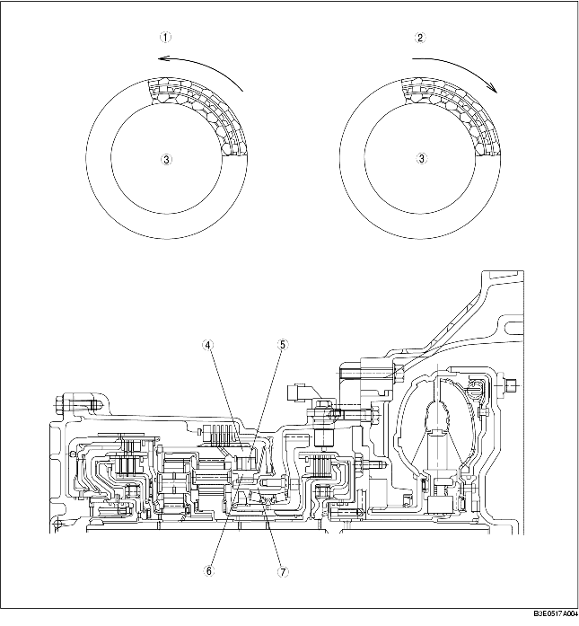

• Der Außenlaufring des Freilaufs (vorderes Hohlrad) dreht sich frei im Uhrzeigersinn (von der Wandlerseite aus gesehen). Bei einer versuchten Drehung des Außenlaufrings gegen den Uhrzeigersinn hingegen stellen sich die Klemmkörper auf und verhindern dies.
• Der Freilauf sperrt die Drehung des vorderen Hohlrades gegen den Uhrzeigersinn und sperrt ebenfalls die Drehung des hinteren Plantengetriebes gegen den Uhrzeigersinn über den hinteren Plantenträger.

.